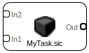
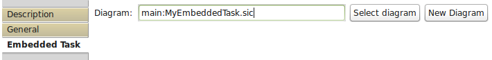

Embedded Task

You can reduce a complexity of your solution by breaking it into several diagrams and nesting them. In Test Diagram you use Embedded Task either to:
- nest a diagram that you want to test;
- nest other Test Diagrams to prepare more complex tests;
Input Ports:
- Ports are defined by User.
Output Ports:
- Ports are defined by User.
Properties:

- Diagram: <path from tasks directory with indication 'main:' or 'test:' for Test Diagrams>
You can use select dialog to find your diagram. You can also launch diagram creation wizard.